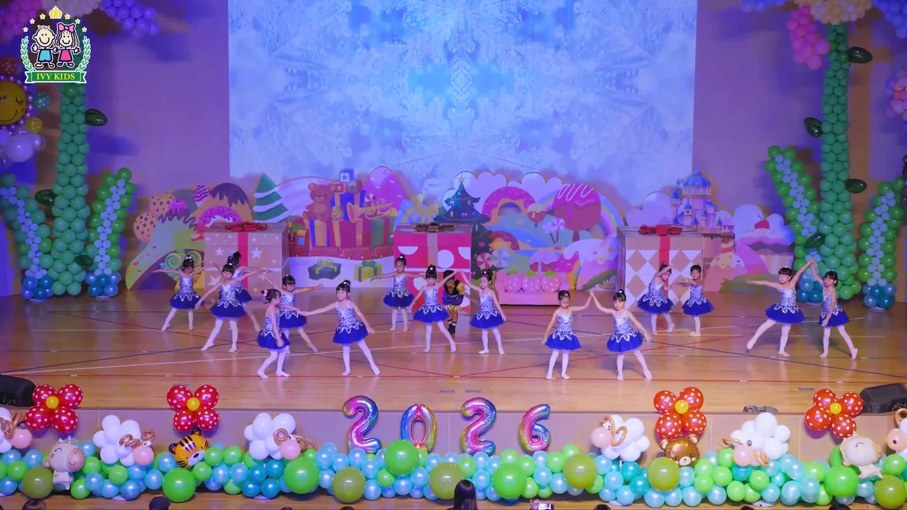
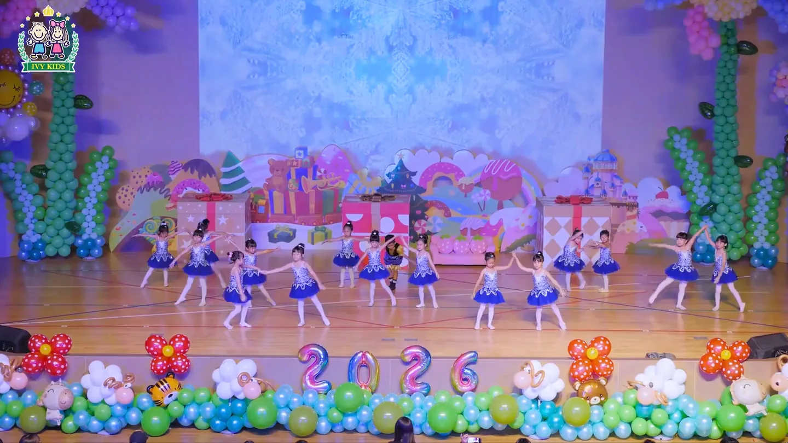

孩子的一天影片：正式站與補標記版
左邊是正式站現在的影片（沒有色彩標記），右邊是補上 sRGB 標記的新版。在 Mac 上兩邊應該幾乎一樣，這就是目標：螢幕上的樣子不變。「從封面開始播」先停在封面再播放，左邊會在開播時亮一截，右邊不會。


正式站 新版- 亮度、顏色照正式站螢幕上實際的樣子：12 格平均差 1.6–2.0/255，只是壓縮雜訊。
- 開播不再跳色：封面接第一格平均差 11.2 → 2.1/255。封面跟著變亮一點（現在跟影片一樣），減少動態時看到的就是它。
- 標成 sRGB 後，Chrome 與 Safari 都照檔案裡的值顯示；舊檔的亮度取決於瀏覽器怎麼猜（Mac 以外的平台沒有實測）。
這頁只放影片本身，官網上面還疊著深綠紗與時段光，那幾層不動。新版桌機檔 9.6 MB（舊 9.3 MB）、手機檔 7.3 MB（舊 7.5 MB）。